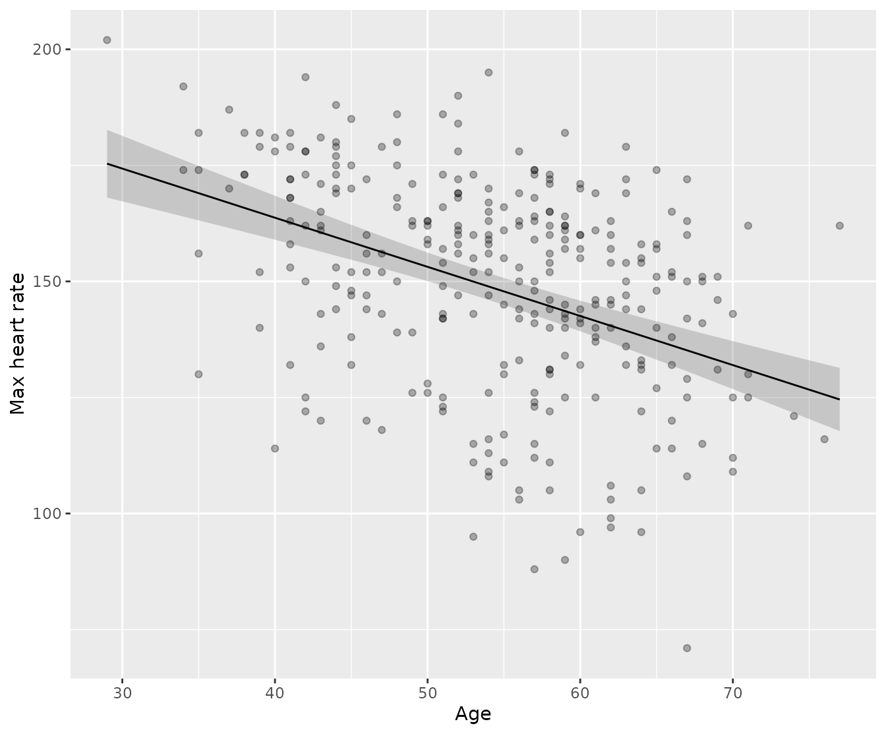

Predicting with linear models from {statim}
A practical guide using real clinical data
Source:vignettes/usage/predict-examples.Rmd
predict-examples.RmdRationale
statim has a slight different approach on making
predictions with predict(). At its core, it’s S7, so strict
types when making predictions is enforced. Its last vignette fits two models off the
Cleveland Clinic dataset: a linear regression predicting maximum heart
rate from age, sex, and cholesterol, and a logistic regression (through
GLM()) predicting the occurence of heart disease from age,
cholesterol, and resting blood pressure. Both came out of the same
define_model() |> prepare_model() |> conclude()
syntax. This vignette picks those fits back up and asks the next
question: now that you have a model, what does it say about a patient
who isn’t in the dataset yet?
Setup
Let us used box package, as per requested by the
author of this package himself. The usage here does not differ from
other vignettes (see vignette("usage/htest") and
vignette("usage/model-infer")), where the qualified imports
are explictly named.
# For the examples
box::use(
statim[
define_model, prepare_model, via, conclude, predict,
LINEAR_REG, GLM
],
stats[binomial]
)
# To handle the data
box::use(
readr[read_csv],
dplyr[mutate, glimpse],
ggplot2[
ggplot, aes, geom_point, geom_line, geom_ribbon, labs
]
)
heart =
read_csv(system.file("extdata", "heart-disease.csv", package = "statim")) |>
mutate(
sex = factor(sex, levels = c(0, 1), labels = c("Female", "Male")),
target = factor(target, levels = c(0, 1), labels = c("No", "Yes"))
)
[1mRows:
[22m
[34m303
[39m
[1mColumns:
[22m
[34m14
[39m
[36m──
[39m
[1mColumn specification
[22m
[36m────────────────────────────────────────────────────────
[39m
[1mDelimiter:
[22m ","
[32mdbl
[39m (14): age, sex, cp, trestbps, chol, fbs, restecg, thalach, exang, oldpea...
[36mℹ
[39m Use `spec()` to retrieve the full column specification for this data.
[36mℹ
[39m Specify the column types or set `show_col_types = FALSE` to quiet this message.
glimpse(heart)Rows: 303
Columns: 14
$ age <dbl> 63, 37, 41, 56, 57, 57, 56, 44, 52, 57, 54, 48, 49, 64, 58, 5…
$ sex <fct> Male, Male, Female, Male, Female, Male, Female, Male, Male, M…
$ cp <dbl> 3, 2, 1, 1, 0, 0, 1, 1, 2, 2, 0, 2, 1, 3, 3, 2, 2, 3, 0, 3, 0…
$ trestbps <dbl> 145, 130, 130, 120, 120, 140, 140, 120, 172, 150, 140, 130, 1…
$ chol <dbl> 233, 250, 204, 236, 354, 192, 294, 263, 199, 168, 239, 275, 2…
$ fbs <dbl> 1, 0, 0, 0, 0, 0, 0, 0, 1, 0, 0, 0, 0, 0, 1, 0, 0, 0, 0, 0, 0…
$ restecg <dbl> 0, 1, 0, 1, 1, 1, 0, 1, 1, 1, 1, 1, 1, 0, 0, 1, 1, 1, 1, 1, 1…
$ thalach <dbl> 150, 187, 172, 178, 163, 148, 153, 173, 162, 174, 160, 139, 1…
$ exang <dbl> 0, 0, 0, 0, 1, 0, 0, 0, 0, 0, 0, 0, 0, 1, 0, 0, 0, 0, 0, 0, 0…
$ oldpeak <dbl> 2.3, 3.5, 1.4, 0.8, 0.6, 0.4, 1.3, 0.0, 0.5, 1.6, 1.2, 0.2, 0…
$ slope <dbl> 0, 0, 2, 2, 2, 1, 1, 2, 2, 2, 2, 2, 2, 1, 2, 1, 2, 0, 2, 2, 1…
$ ca <dbl> 0, 0, 0, 0, 0, 0, 0, 0, 0, 0, 0, 0, 0, 0, 0, 0, 0, 0, 0, 2, 0…
$ thal <dbl> 1, 2, 2, 2, 2, 1, 2, 3, 3, 2, 2, 2, 2, 2, 2, 2, 2, 2, 2, 2, 3…
$ target <fct> Yes, Yes, Yes, Yes, Yes, Yes, Yes, Yes, Yes, Yes, Yes, Yes, Y…
Refit the two models from the regression vignette:
mod1 = heart |>
define_model(thalach ~ age + sex + chol) |>
prepare_model(LINEAR_REG) |>
conclude()
mod2 = heart |>
define_model(target ~ age + chol + trestbps) |>
prepare_model(GLM, family = binomial()) |>
conclude()Predicting from first model
The first model refers to the first code above, namely
mod1, an example of a classic linear regression. Suppose a
clinician wants to know what mod1 implies for one
particular patient: 63 years old, male, cholesterol 275. That’s a single
row, built by hand, evaluated against the fitted equation:
patient = data.frame(
age = 63,
sex = factor("Male", levels = levels(heart$sex)),
chol = 275,
trestbps = 145
)
predict(mod1, new_data = patient, interval = "confidence")# A tibble: 1 × 3
.pred .pred_lower .pred_upper
<dbl> <dbl> <dbl>
1 140. 136. 144.
interval = "confidence" is simply passed to
auto_predict() from class_lm_object class,
which produces confidence interval estimates that answers “how sure is
the model about the average patient with this profile”.
interval has another option: "prediction,
produces confidence interval estimates that answers “how sure is the
model about this one patient”.
predict(mod1, new_data = patient, interval = "prediction")# A tibble: 1 × 3
.pred .pred_lower .pred_upper
<dbl> <dbl> <dbl>
1 140. 98.7 182.
The same operation on mod2 reads through the inverse
link by default, so it comes back as an implied probability rather than
a heart-rate value:
predict(mod2, new_data = patient, interval = "confidence")# A tibble: 1 × 3
.pred .pred_lower .pred_upper
<dbl> <dbl> <dbl>
1 0.407 0.325 0.494
interval = "prediction" isn’t offered for
mod2 at all. GLMs have no closed-form prediction error the
way OLS does, so rather than return something that looks precise but
isn’t, that argument value simply doesn’t exist for this model.
A fitted curve for plotting
statim’s predict() is strictly typed: by
default it ensures that the output must produce a data frame. How about
we visualize them for better interpretability?
Evaluate mod1 across a range of ages, holding the other
predictors fixed, to draw the fitted relationship itself. This is the
same fitted-line-with-band you’d see in any applied regression chapter,
made by evaluating the equation at many covariate points rather than
one:
age_grid = data.frame(
age = seq(min(heart$age), max(heart$age), length.out = 50),
sex = factor("Male", levels = levels(heart$sex)),
chol = mean(heart$chol)
)
fitted_curve = predict(mod1, new_data = age_grid, interval = "confidence") |>
mutate(age = age_grid$age)
ggplot(fitted_curve, aes(age, .pred)) +
geom_ribbon(
aes(ymin = .pred_lower, ymax = .pred_upper),
alpha = 0.2
) +
geom_line() +
geom_point(data = heart, aes(age, thalach), alpha = 0.3) +
labs(y = "Max heart rate", x = "Age")
Nothing here was held out or scored for accuracy. Every one of those
fifty ages is a point on the same curve implied by the coefficients
mod1 already reported, with cholesterol pinned at its mean
and sex pinned at “Male” so the curve isolates the effect of age
alone.
On ergonomicity
Base R’s predict.lm returns a vector, a matrix, or a
list depending on which arguments you passed. statim’s
predict() always returns the same shape —
.pred, truth when honest,
.pred_lower/.pred_upper when requested — no
matter whether it’s mod1 or mod2 underneath,
or one hand-built row versus a fifty-row grid for a plot.
That consistency comes from one generic, auto_predict(),
which any package can implement once for its own result class and get
predict() for free — no changes to statim
itself required. What differs is just which arguments a model can
honestly support: interval = "prediction" for
class_lm_object, not for class_glm_object;
type only for the GLM. See ?class_lm_object /
?class_glm_object for specifics.